Starte FreeCAD und lege ein neues Dokument an. Wähle den Arbeitsbereich Part Design.
- Das Dokument heißt am besten Rad.
- Oben in der Leiste den Arbeitsbereich auswählen.
Kapitel 2
Das Rad für dein Carry – Rotationskörper, sechs Löcher und Gummiring.
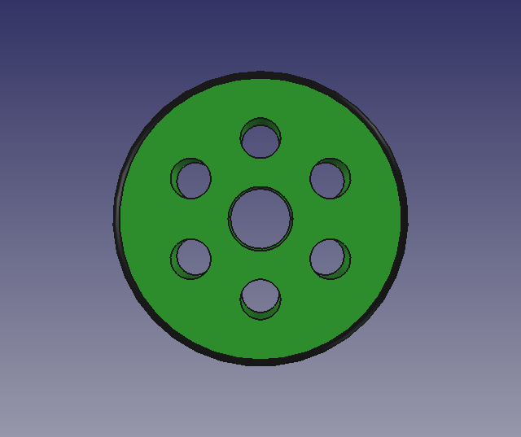
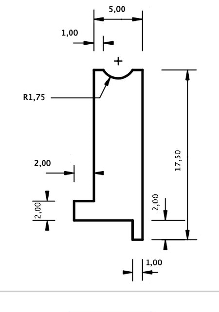
Starte FreeCAD und lege ein neues Dokument an. Wähle den Arbeitsbereich Part Design.
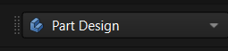
Lege einen neuen Körper an: Neuer Körper.
Klicke auf Neue Skizze und wähle die XZ-Ebene.
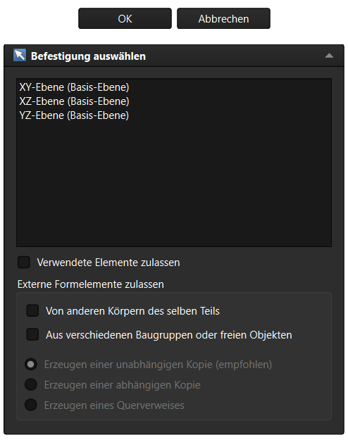
Wähle das
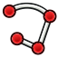
Linienzug-Werkzeug und zeichne die Kontur A → B → C → D → E → F → G → H.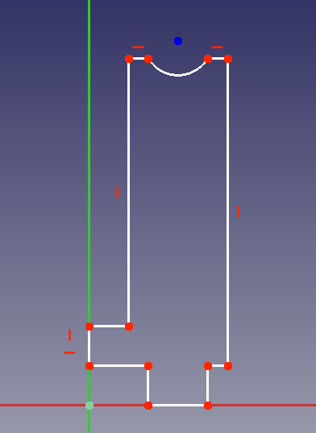
Mit M wechselst du beim Linienzug zwischen Linie und Bogen.
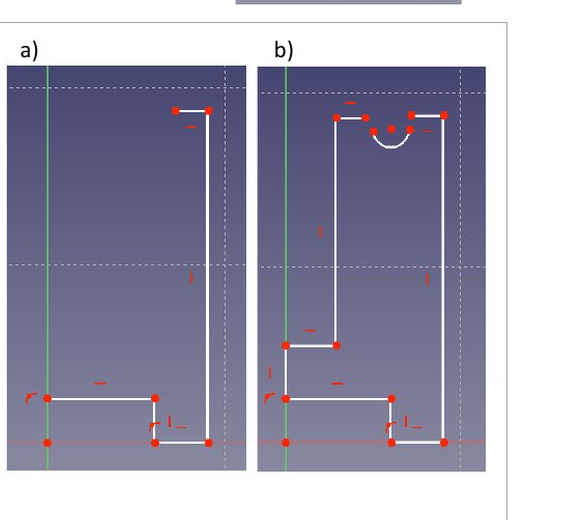
Bemaße das Profil mit
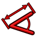
: 5, 17,5, 2, 1 mm und R1,75.Kontrolliere vor dem Schließen die Randbedingungen im Aufgabenfenster.
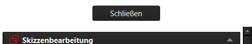
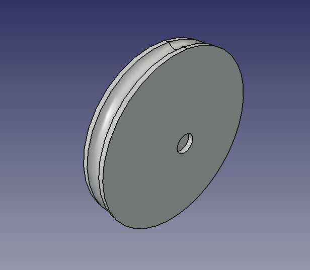
Klicke auf
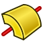
Rotieren.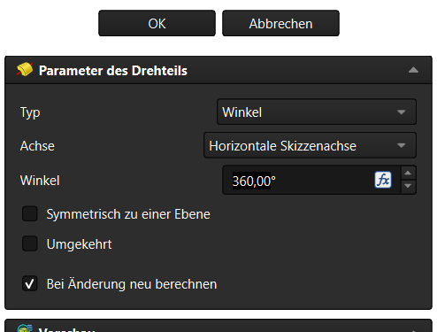
Der Radkörper ist fertig: Ø35 mm, 7 mm breit.
Die Rotationsachse ist die horizontale Skizzenachse – nicht die vertikale.
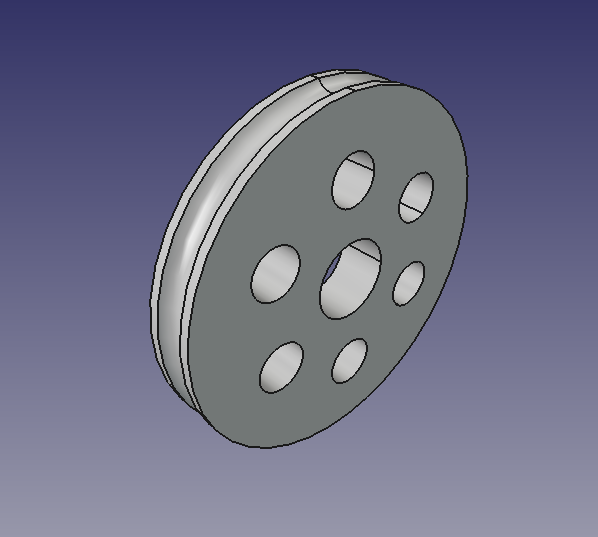
Klicke die Innenseite des Rads an und erzeuge eine zentrale Bohrung Ø8.
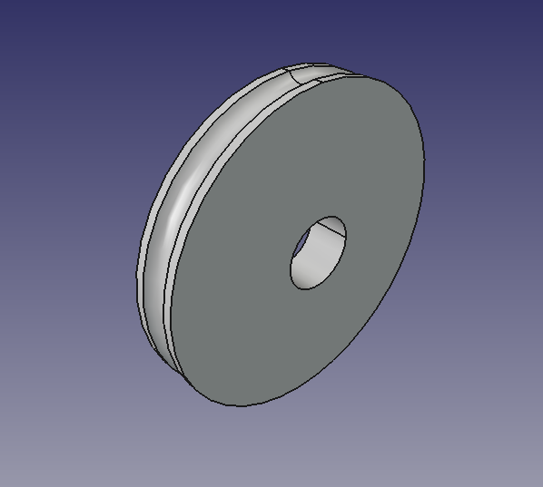
Erzeuge die Lochskizze: Kreis R2,5 bei 10 mm vom Mittelpunkt.
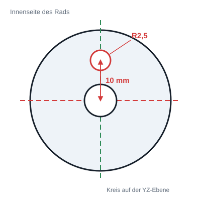
Markiere die Loch-Tasche und wähle
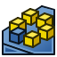
Polares Muster.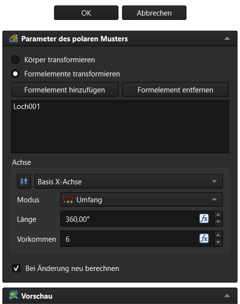
Das Rad hat jetzt 6 Löcher und die zentrale Bohrung.
Das Muster wird um die Radachse gelegt – das ist die X-Achse.
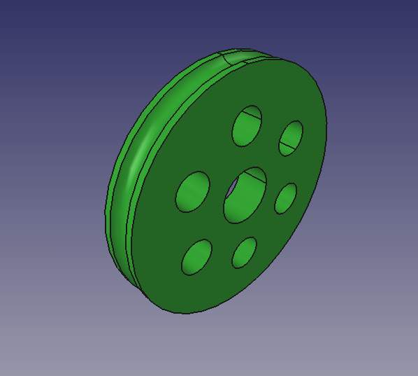
Rechtsklick (M2) auf den Körper Rad → Darstellung → Flächenfarbe.
Die Farbe hilft später bei der Baugruppe, die Teile auseinanderzuhalten.
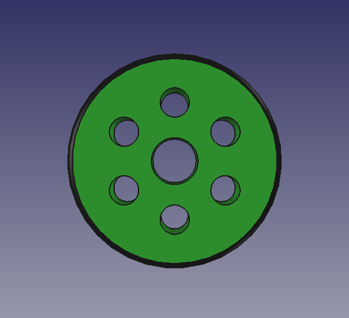
Lege im Aufgabenfenster einen neuen Körper an und nenne ihn Gummiring.
Neue Skizze auf der XZ-Ebene: Kreis R1,75, Mittelpunkt 18,5 mm von der Achse.
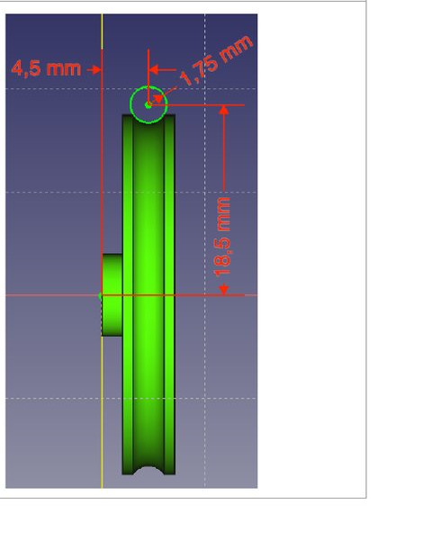
Skizze schließen und Rotieren: Achse horizontal, 360°.
Der Gummiring ist bewusst ein eigenes Teil – so kann er später in der Baugruppe anders gefärbt oder ersetzt werden.
Benenne die beiden Körper im Modellbaum um: Radfelge und Gummiring.
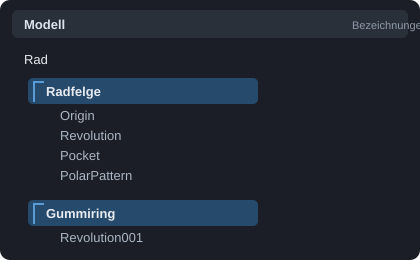
Speichere die Datei als Rad.FCStd im Ordner Carry.
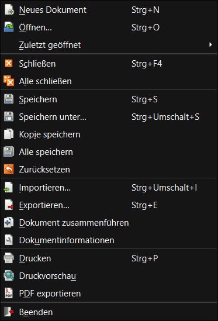
Kontrolle vor dem Speichern: 6 Löcher, Gummiring, grün/schwarz.
Dein Rad ist grün, hat sechs Löcher und einen schwarzen Gummiring. Jetzt kann es mit dem Lager weitergehen.